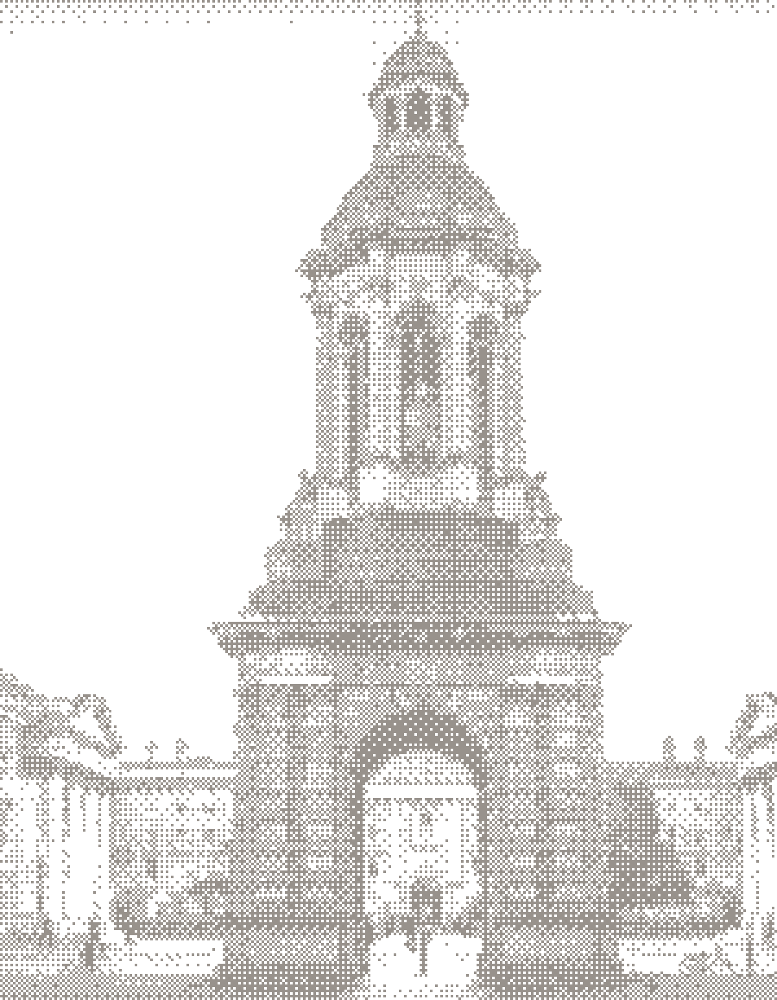
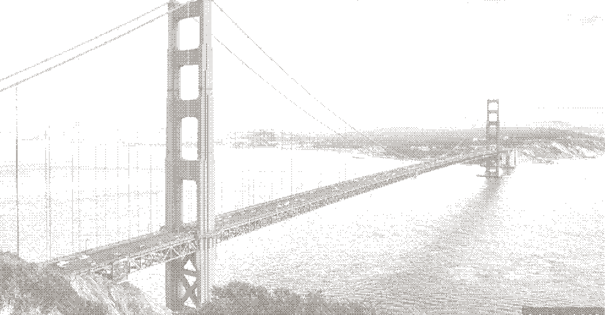
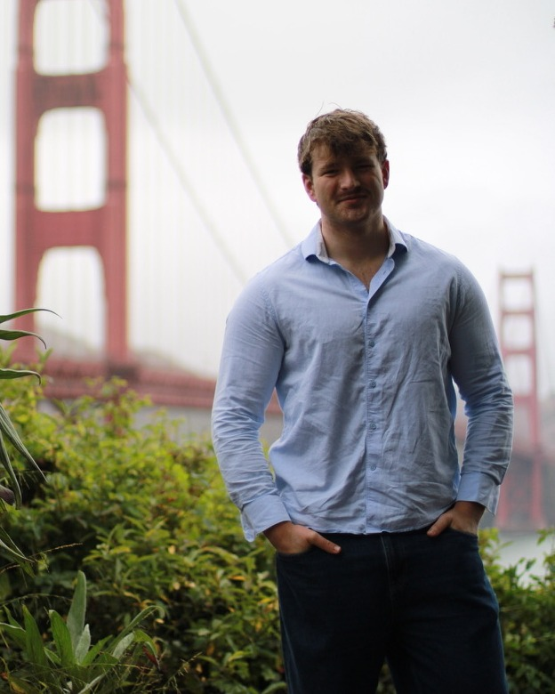
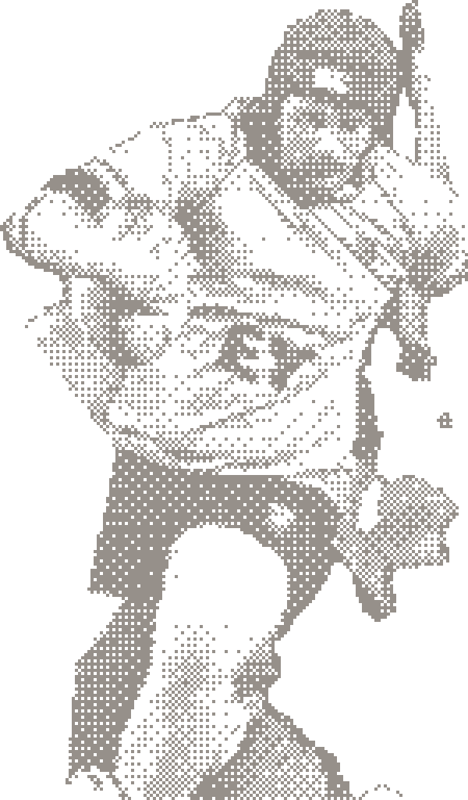
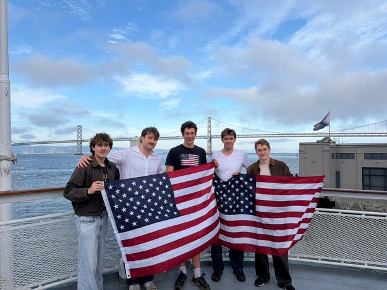
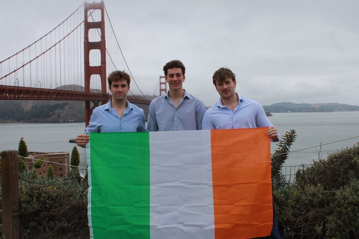
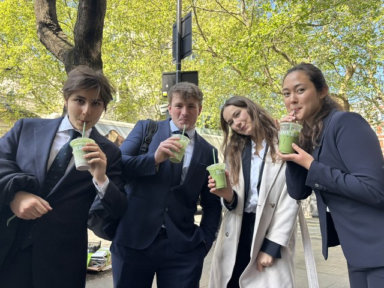
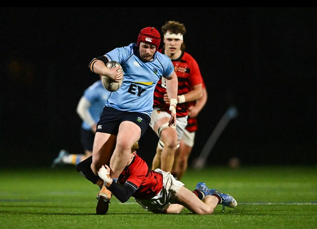
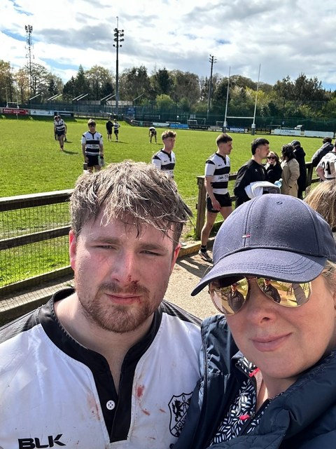

// portfolio
I like to build things.
👋 Anytime you see a hover me! badge, hover over it — and 🔊 turn up your volume for maximum fun
Scroll

Hi! I'm Alex — previously Founding Engineer at ProvenMetal, a YC-backed startup, and currently an Engineering with Management student at Trinity College Dublin. My passion for building is driven by the impact I want to have on the world.
The best way to learn something is to do it. The early days at ProvenMetal and building an EdTech startup from scratch taught me more than any lecture or textbook, and I'm always looking for the next problem worth learning that way.
"Do not be timid and squeamish about your actions. All life is an experiment. The more experiments you make the better." — Ralph Waldo Emerson
Moved to San Francisco to help build ProvenMetal as one of a team of four, taking on the electronics supply chain in the US. Joined before the first dollar of revenue and saw the company grow to ~$150k, working across every part of the business along the way — sourcing software, internal tooling, customer ops and go-to-market.


Leading the design and deployment of end-to-end AI automation solutions — intelligent voice agents for inbound reception and outbound lead qualification via Twilio, and autonomous AI-powered website auditing tools with actionable SEO performance scoring.
Selected for a competitive spring insight programme in global corporate and investment banking.

Analysing technology hardware equities for a student-managed portfolio with over €700k in AUM. Building DCF models, running comparable company analyses, and presenting investment theses to the fund.
Worked on optimising drone delivery operations. Wrote production code that improved system efficiency and reliability across the delivery pipeline.
An AI-powered Leaving Cert study platform that helps students prepare more effectively. Built from scratch as a real product, handling everything from web development to AI/LLM integration and information security.
A full-stack platform for TCD Engineering Management students featuring real-time messaging, role-based access control, file storage, and SMS notifications. The whole stack, from auth to deployment.
Designed and built a distributed data pipeline on Databricks that ingests and processes 10M+ web pages from Common Crawl (AWS S3) using PySpark, extracting structured SEO signals — meta tags, canonical tags, HTTPS adoption, and link profiles. Built a client comparison tool that scores any domain against web-wide benchmarks.
This is a personal favourite. Interactive real-time black hole renderer using custom GLSL shaders. Implements ray marching, gravitational lensing, Doppler shifting, and accretion disk physics — all running at interactive frame rates on consumer hardware.
Technical
// current playlist
// currently reading
Last updated: 9th September 2026
// past favourites
Beyond code


Old Belvedere RFC. UCD McCorry Cup winner. Coached at school level.
Self-taught piano and guitar.
Gaeilge, English, German, and self-taught Spanish.
Passionate about mathematics and find teaching it incredibly rewarding. Tutor college, Leaving Cert, and Junior Cert students.
Currently working up to 4 balls.
Always happy to take my friends' money.
Selected as a Peer Mentor, managing the academic and social onboarding of students.
// say hello
Always happy to chat about interesting projects, opportunities, or ideas. Drop me a line.
v1 mock — moss & gold
theme